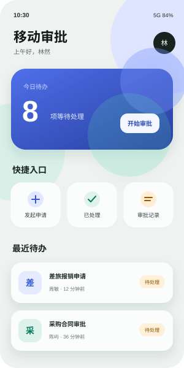
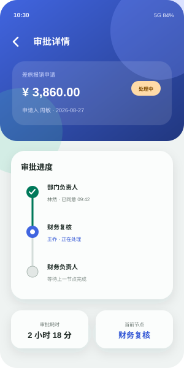
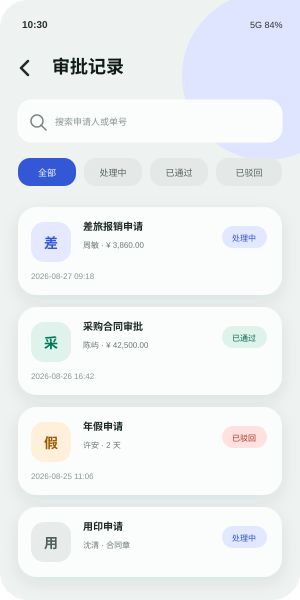

本周内测态势
84 名测试用户参与 7 个应用
最近一次发布：移动审批 2.4.0 · 昨天 18:42
- 开放下载
- 6
- 待处理 Bug
- 7
- 处理中
- 2
Layered Frost · Material 3
维护内测应用、版本与测试组范围
| 应用 | 最新版本 | 测试组 | 下载完成 | 未关闭 Bug | 更新时间 |
|---|---|---|---|---|---|
| 移动审批com.intra.approval | 2.4.0 | 核心测试组 | 56 人 | 6 | 08-27 18:42 |
| 安全管家com.intra.safeguard | 1.7.3 | 安全测试组 | 42 人 | 1 | 08-26 11:05 |
| 数据看板com.intra.dashboard | 3.1.0 | 经营测试组 | 38 人 | 3 | 08-25 16:20 |
| 员工服务com.intra.employee | 2.0.1 | 全员测试组 | 64 人 | 0 | 08-23 09:17 |
| 知识库com.intra.knowledge | 1.3.5 | 内容测试组 | 27 人 | 2 | 08-21 15:48 |
| 设备助手com.intra.device | 2.2.0 | 运维测试组 | 31 人 | 0 | 08-20 12:30 |
| 终端工具箱com.intra.toolbox | 0.9.8草稿 | 运维测试组 | 19 人 | 1 | 08-18 10:02 |
公司审批与任务协同
版本 2.4.0


待处理导出、推送等问题
处理中管理员正在跟进
待验证请在 2.4.0 版本验证